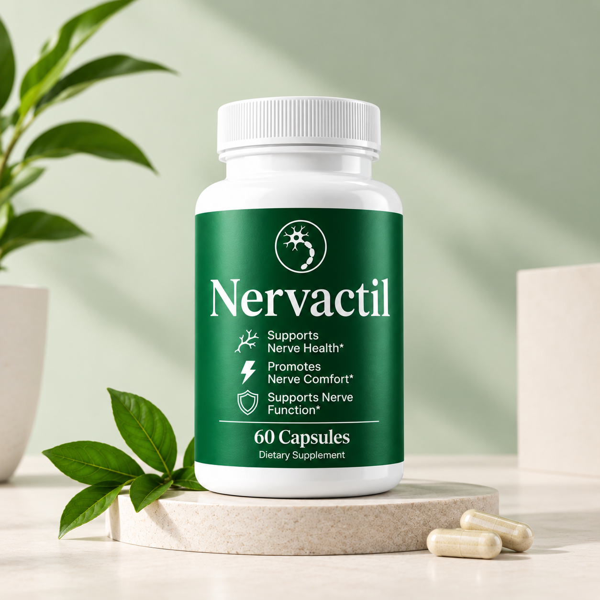

Nervactil Benefits: What to Know
A careful overview of the wellness positioning shown in the supplied product materials, plus practical factors to consider when researching a dietary supplement.

What benefits are associated with the product positioning?
The supplied Nervactil packaging highlights support for nerve health, nerve comfort, and nerve function. Those statements describe the product's presentation; they should not be interpreted as proof that the supplement treats a disease or produces a specific medical outcome.
Potential wellness considerations
Support-oriented positioning
Readers researching Nervactil may be interested in how a supplement positioned around nerve health could fit into a broader wellness routine. A sensible review looks at the product label, ingredient information, serving directions, and the person's overall routine rather than promising a particular effect.
Daily routine context
Supplements are often considered alongside regular meals, adequate sleep, physical activity, hydration, and other healthy habits. These factors can influence how a person experiences any wellness product, making it difficult to attribute every change to one supplement.
Ingredient-to-benefit questions
If you want to understand why a particular ingredient is included, first confirm that ingredient is actually present in the current formula. The supplied images do not provide enough information to establish a complete ingredient list or quantities.
What should you consider before use?
- Check the current official product label.
- Review ingredients and serving information before use.
- Consider allergies, sensitivities, medicines, and personal circumstances.
- Do not use a supplement as a replacement for prescribed treatment.
- Ask a qualified healthcare professional if you are unsure whether it is appropriate for you.
Botanical or lifestyle visuals can communicate a brand's wellness theme, but they do not establish clinical effectiveness or prove that a particular ingredient is in the formula.
Want to review the current product information?
Use the official source to check the latest label, directions, and product details before making a decision.